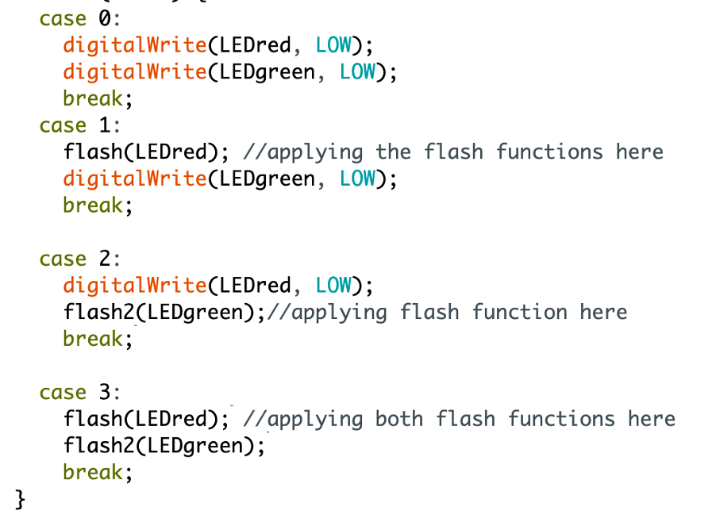

This week as we were introduced to Arduino Uno and its software, we were provided to do certain tasks to familiarise ourselves with the software and the application of it.
Task 1: Write a program to blink the LED in a variety of patterns.
The equipment that I used were:
- USB Cable
- Breadboard
- Arduino Uno
- 1 LED (I used red)
- 3 jumper wires
- 1 220ohm resistor (red, red, brown stripes)
Setup Process
- Connect your components like the picture shown below:
- Connect your USB port to your device (laptop, computer, etc)
Coding Process
- Using the Arduino software, click on the open icon and upload the blink code under “01.Basics”
- From the code, setup the pins that you are using, I used pin 8 so my pin values are 8 here:
- After that, input the time value you want for the LED to on and off. In the software, we use milliseconds. One second is equals to 1000 milliseconds.
- Here, the LED should turn on for one second and off for one second.
- Play around with the time values. For the second timing, I made the intervals shorter as shown here below:
Task 2: Controlling 2 LEDs using a switch
Continuing on from task 1, add on these components:
- 3 jumper wires
- 1 220ohm resistor
- 1 1kiloohm resistor (orange, black, brown stripes)
- Different coloured LED (I used green)
- Pushbutton Switch
- Connect in the same arrangement as the previous one just using a different pin. For me, I used pin 7.
- Connect the rest of your components to the picture shown below:
- I used pin 6 for the pushbutton switch
- Connect your last jumper wire from the same column as your pushbutton switch to ground in your breadboard
Coding Process
- You need to setup your constant functions as in those that will not change. This will help you to code easier by using those function names.
- In this case, the button will be the one reading thus it should be INPUT whereas for the LEDs, there would be the outputs.
- “state = 0” means that we are assigning a value of 0 to the function “state”
- I am using state to show what I want to happen in different cases.
- Case 0: LEDred is off, LEDgreen is off as well
- (Press)
- Case 1: LEDred is on, LEDgreen is off
- (Press)
- Case 2: LEDred is off, LEDgreen is on
- (Press)
- Case 3: LEDred and LEDgreen is on
- (Press-> goes back to Case 0)
Task 3: Flashing LEDs using switch

Demonstration
Challenges
I had a hard time trying to figure out the code on my own for the switch control part of the assignment. However, after asking for my teacher’s help, I learnt a lot of new things like how to use the state function to execute a sequence of cases. One challenge I also faced was that every time I pressed the button, it would jump and execute the next case even though it had not executed the previous one. This is called bouncing: It is when two metal parts come into contact to short the supply. This thus creates a false triggering or multiple triggering like the button is pressed multiple times.